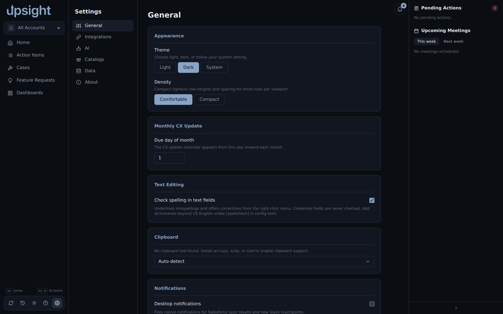
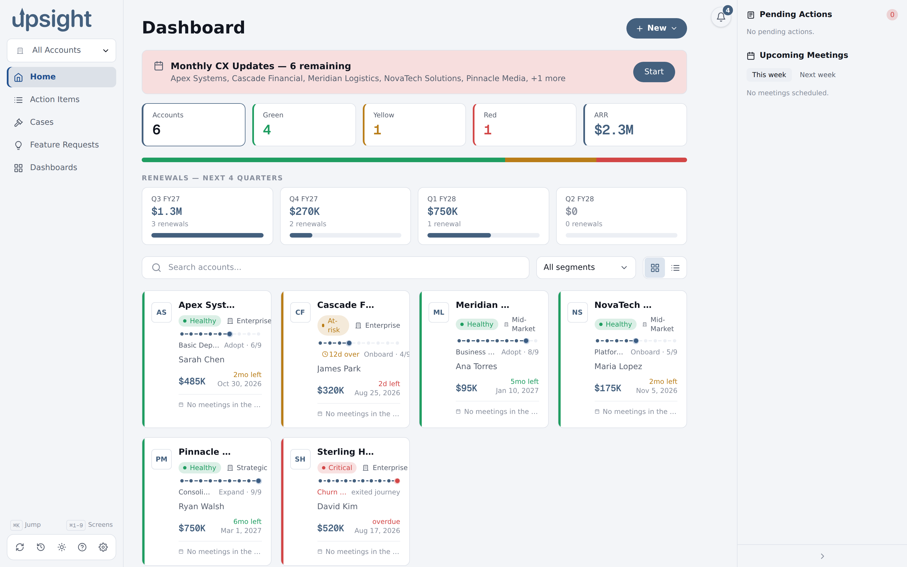

Settings¶
Settings is reachable from the bottom of the left sidebar. It is organized into six sections: General, Integrations, AI, Catalogs, Data, and About.
General¶
Appearance. Choose Light, Dark, or System for the color theme. System follows your OS setting. Density switches between Comfortable and Compact; Compact tightens row heights to show more data per screen.


Monthly CX Update. Set the day of month when the CX update reminder becomes visible for accounts without a completed update. Accepts 1 through 28.
Meeting summaries. Map folder names to Upsight accounts for the
upsight summarize CLI. Add a row when a folder name does not match an account
automatically (for abbreviations or ambiguous names). Folders that already match by
name need no mapping here.
Clipboard. Upsight detects available clipboard tools (wl-copy, xclip,
xsel) and uses the first one it finds. To use a specific tool, select it from the
dropdown. The detected or configured tool is shown next to the label.
Notifications. Enable desktop notifications for Salesforce sync results and new Slack touchpoints.
Keyboard shortcuts. A reference list of all keyboard shortcuts in the app.
Integrations¶
Salesforce. Shows the authentication status of your sf CLI session. Click
"Log in to Salesforce" if not authenticated. You can also set a custom path to the
sf binary if it is not on your PATH.
Todoist. Enter your Todoist API token to enable task sync. Find the token in Todoist under Settings, Integrations, Developer. After saving, use "Test" to verify the connection. Revoke and regenerate this token from Todoist Settings if you suspect it was exposed.
Aha! Enter your Aha! API credentials to enable feature request sync. A "Test" button verifies the connection. The separate "Post comments to Aha!" toggle gates whether Upsight can post a comment back to an Aha! idea.
Clari Copilot. Enter your Clari Copilot API credentials to pull conversation intelligence data. Find credentials in Clari under Workspace Settings, Integrations, Clari Copilot API.
Google Calendar. Paste your Google Calendar private ICS URL to pull upcoming meeting events. Find the URL in Google Calendar under Settings, "Settings for my calendars," select your calendar, "Integrate calendar," then "Secret address in iCal format." Use "Test" to verify the sync. This URL is a permanent bearer credential. Treat it like a password and do not share it.
Slack. Enter your Slack channel name and Client ID for Slack integration. The Slack channel is used for product updates and release touchpoints.
Product updates retention. Sets how many days of Slack-sourced product update records to keep (default 90).
Salesforce write-back. "Push field edits back to Salesforce" enables the drain that sends locally queued field changes to Salesforce. This is off by default. See Salesforce integration for the full details.
Todoist ship events. Gates whether Upsight offers a "create Todoist task" button when an Aha idea reaches a shipped status in the Events feed.
Todoist suggested tasks. Enables periodic suggestions for stale Todoist tasks linked to your accounts. Set the check interval and how many inactive days trigger a suggestion.
AI¶
The AI section configures the claude CLI used for generating meeting summaries
and other AI features. By default Upsight finds claude on your PATH. Toggle
"Auto" off to set a custom path to the binary.
The AI section also shows the resolved binary path after detection.
Catalogs¶
Catalogs define the master lists for the Stack screen: Products and Infrastructure. You can add, edit, and archive catalog entries here. Each entry has a name, category, and an active flag (inactive entries are hidden from the Stack pickers but not deleted).
The undo button restores the last deleted catalog entry.
Data¶
Database. Shows the current database path, file size, schema version, integrity status, and last backup timestamp. "Compact (VACUUM)" rewrites the database to recover space. "Back up now" takes an immediate snapshot.
Automatic backups. Set how often backups run (in hours) and how many daily and weekly snapshots to keep. Changes take effect on the next launch.
Data Maintenance. "Backfill Win Wires from Salesforce" re-syncs every win wire record against Salesforce to pull the authoritative close date, ACV, TCV, opportunity name, owner, and stage. Safe to run anytime.
Import / Export. Export selected accounts to a bundle ZIP or import a bundle from another Upsight instance. See Backup and restore for details.
Sync. Shows the .stignore patterns to add to your Syncthing folder config.
See Multi-machine sync for details.
About¶
Paths. Shows the locations of the config file, database, and session file.
Diagnostics. Shows the logs directory and the backup directory, with buttons to open the log folder and take an immediate backup.
Privacy. Toggle the crash-report dialog. When enabled, an uncaught exception shows a redacted report you can copy and file as a GitHub issue. Nothing is sent automatically.
Version. Shows the app version and build stack.